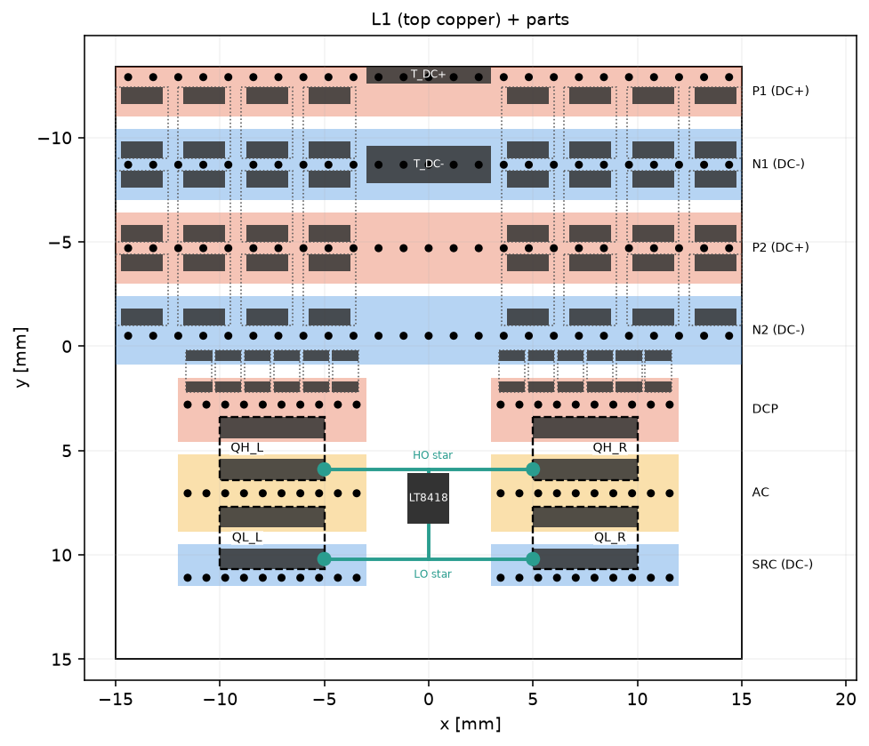
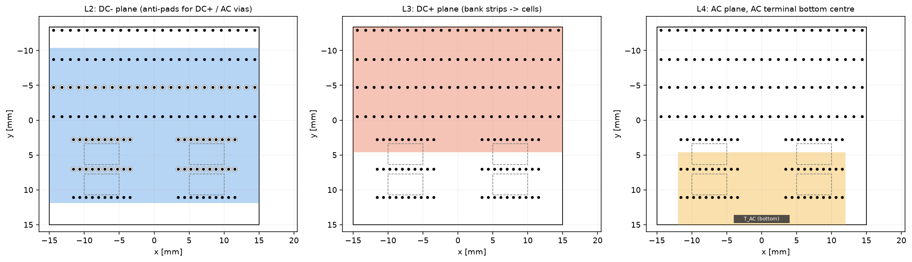
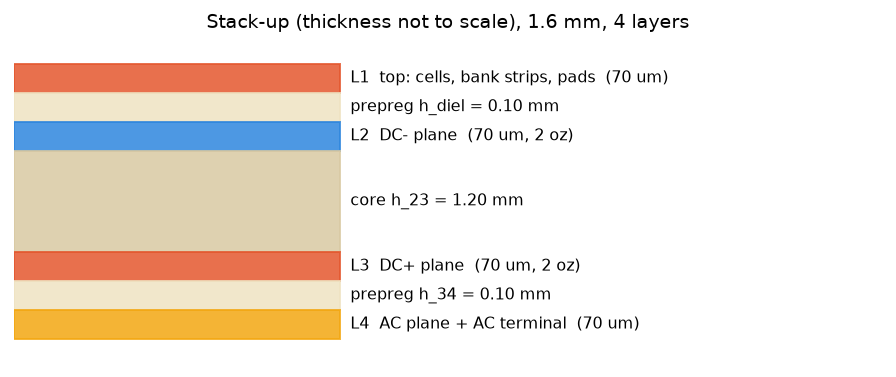

Generated from simulation/bb_q3d/bb_geometry.py, the same geometry used by the Q3D model
(simulation/bb_q3d/bb_q3d.py). Colours: red DC+, blue DC-, orange AC, green gate, dark pads = Q3D terminals,
dashed = component bodies (gaps in copper).
| Board | 30 x 28.2 mm, 4 layers, 1.6 mm; mirror-symmetric about x = 0 |
| Cells | 2 x PL_A vertical loops at x = +/-7.5 mm, island width 9.0 mm |
| Driver | LT8418 in the 6 mm centre corridor at the AC-island height; HO and LO stars to both FETs |
| Local caps | 6 x 1 uF 0805 per cell next to QH (commutation loop over L2) |
| Bank | 24 x 10 uF 1210 in three rows between alternating DC+/DC- strips (P1, N1, P2, N2) |
| L2 | solid DC- under everything, anti-pads for DC+ and AC vias |
| L3 | DC+ plane: bank strips P1/P2 and both cell DC+ islands |
| L4 | AC plane joining both switch nodes; AC terminal pad bottom centre |
| Terminals | T_DC+ (P1 centre), T_DC- (N1 centre), T_AC (bottom side, centre) |


